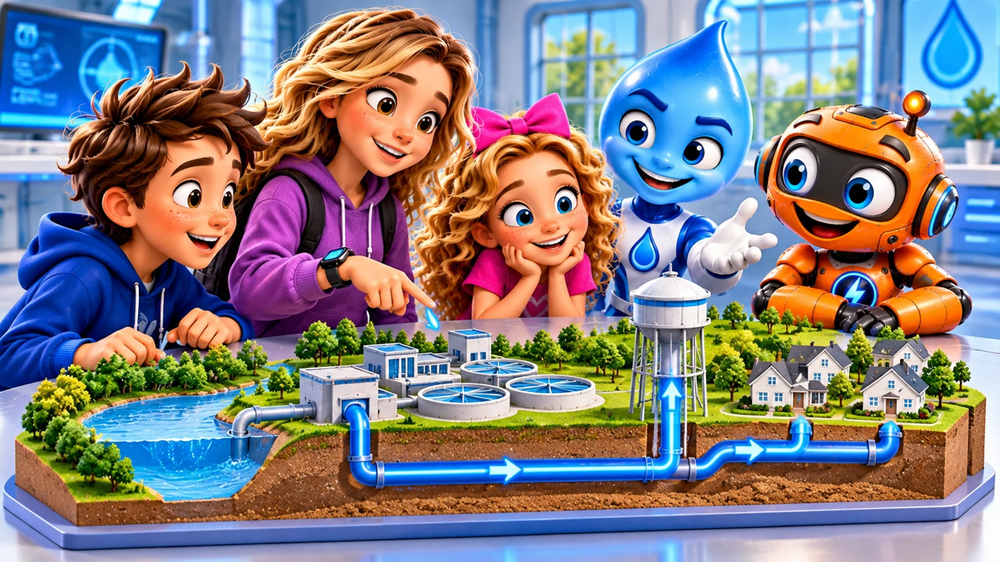
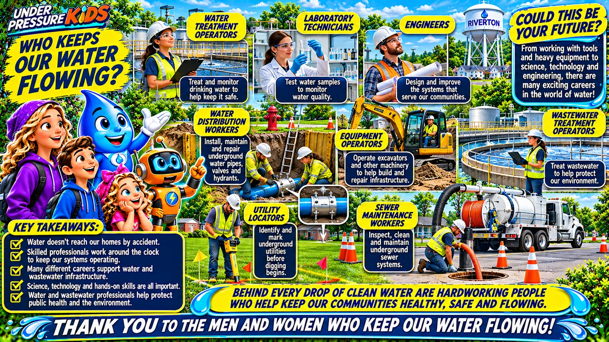
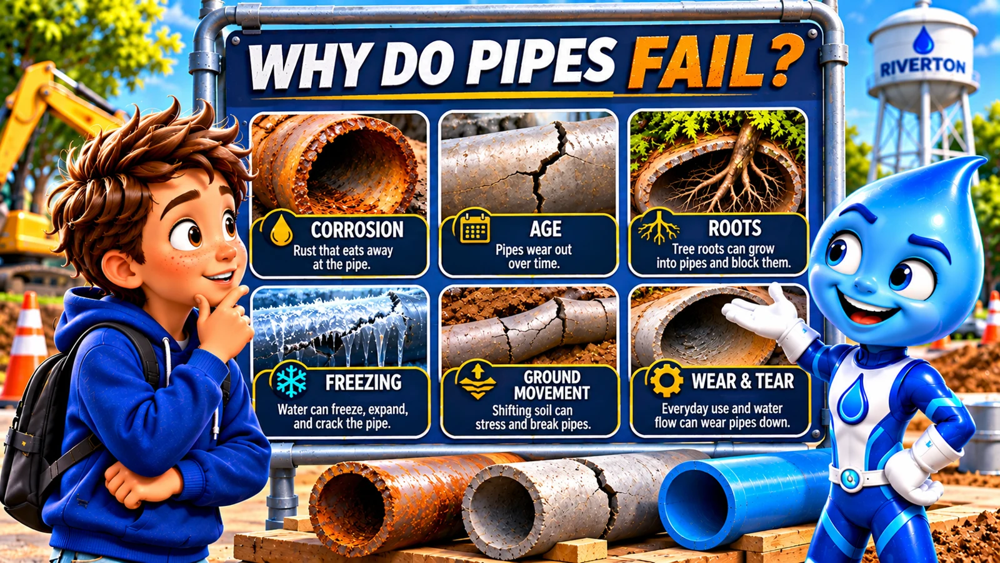

Welcome to Riverton
Under Pressure Kids
Big adventures begin beneath our feet!
Explore the hidden world of water with Drip, Bolt, Piper, Max and Mia.
Start exploring
Discover the hidden world
Water adventures

How Do Water Towers Work?
Read the discovery
What's Beneath Our Streets?
Read the discovery
Why Do Water Pipes Break?
Read the discoveryBooks for curious kids
The Mystery of the Missing Water
Join the Riverton crew on an illustrated adventure to discover why the water has stopped flowing.
Under Pressure Kids Coloring & Activity Book
Explore pipes, hydrants, trucks, mazes and more with Piper, Drip and Bolt.
For parents and educators
Explore illustrated lessons about water, infrastructure and the people who keep communities running. Read together and encourage children to ask questions about the world beneath their feet.